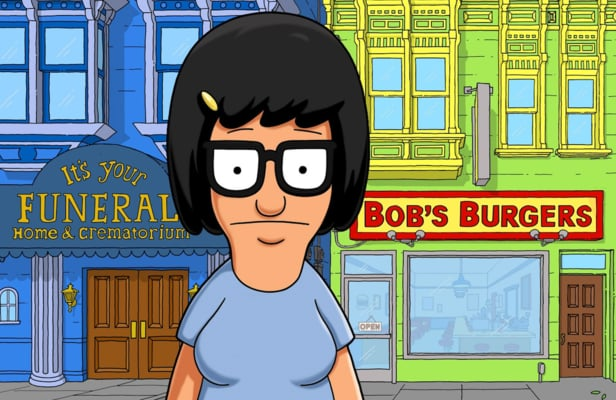
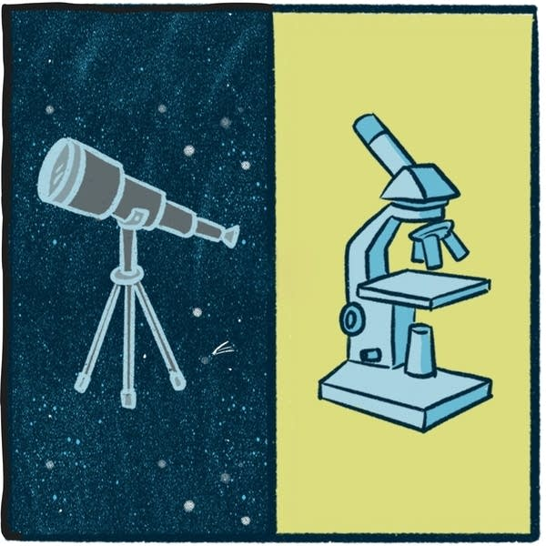
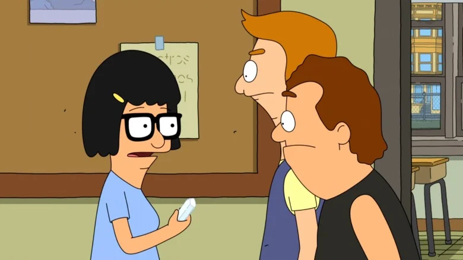
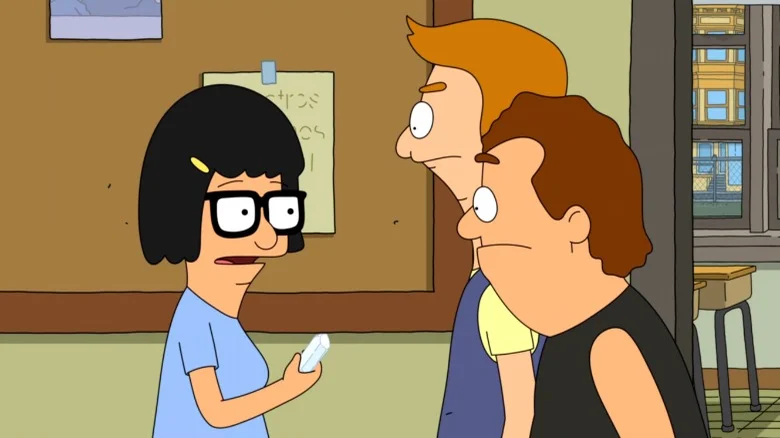
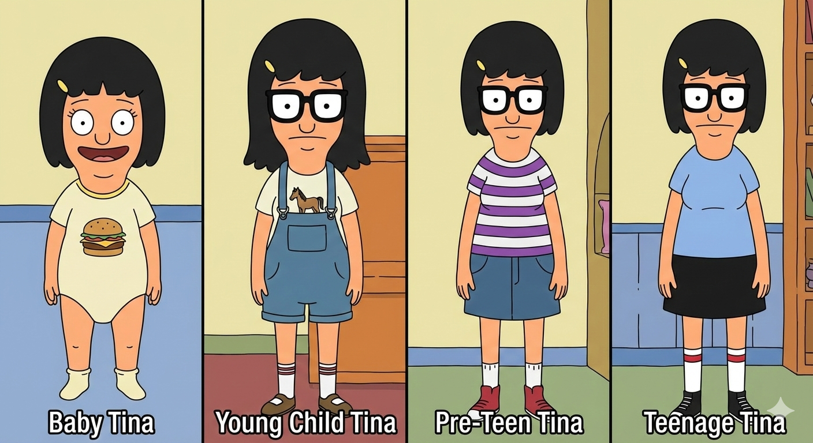

Bronfenbrenner's Ecological Systems Theory & Adolescent Development:
a social cognitive neuroscience perspective
Will Moore | Gaston College | 11-21-2025
Dark Ages & The Age of Gold:
Classics in Medieval and Renaissance British Literature
Sophomore English
Brain, Behavior, & Sex
an intro to behavioral neuroendocrinology
Frames, Brains, & Growing Pains

Will Moore | Gaston College | 11-21-2025
Frames:
scope is important - choose your glasses wisely!
Brains:
no two are alike, and individual differences are crucial
Growing Pains:
to study complex processes (like adolescent development), we need multiple levels of analysis
Caveat Emptor!
psychology is a broad umbrella
critical theory ≠ mental health ≠ neuroscience
Bronfenbrenner, 1979


Bob's Burgers, 2025
Tina Belcher
- 13 y.o. female
- highly extraverted
- socially awkward
- hall monitor / rebel
Tina
Science
can't see a thing without glasses
the object of focus determines the lens
astronomy? you'll need a telescope

ecology? you'll need binoculars
biology? microscope
chemistry? goggles
What kind of scope do we use...
...to study the storm & stress of adolescence?
Bronfenbrenner's Ecological Systems Theory

(Bronfenbrenner, 1977)
■ Individual (Tina)
■ Microsystem
■ Mesosystem
■ Exosystem
■ Macrosystem
■ Chronosystem
Individual
Tina's brain development, personality, experiences
Microsystem
Family, school, friends - direct interactions
Mesosystem
Connections between microsystems
Exosystem
Parents' work, community resources
Macrosystem
Cultural values, societal norms
Chronosystem
Time, transitions, historical context
"for mine own part, it was Greek to me."
system
syn: together
histemi: to stand
micro-
tiny*
meso-
middle
exo-
outside
macro-
large/long
chrono-
time
micro (μ) is a precise prefix in science.
It means "millionth" or 0.000001.
Individual
- 13 y.o. female
- highly extraverted
- socially awkward
- hall monitor / rebel
Microsystem
 


Mesosystem

Exosystem?

Macrosystem

Chronosystem
multiple interacting
levels of analysis

■ Neuron
■ Circuit
■ Region
■ System
■ Brain
■ Organism
Is this a good frame/lens for adolescent development?
"all models are wrong, but some are useful."
~ George Box
"Since all models are wrong the scientist cannot obtain a 'correct' one by excessive elaboration... Since all models are wrong the scientist must be alert to what is importantly wrong."
(Box, 1976)
Bioecological Model: PPCT
Person
- individual characteristics
- biological (nature)
- psychosocial (nurture)
Process
phenomenon under study
Context
micro/meso/exo/macro -systems
Time
immediate, developmental, historical
(Bronfenbrenner, 1994)
(Tong & Ann, 2024)
Ecological Systems Theory
Bioecological Framework
Why does it matter?
- shifted focus from laboratory experiments to a more holistic view of the developing child
- had a meaninful impact on public policy & education (e.g., Head Start program).
- highlights the importance of multiple, interacting levels of analysis
Bronfenbrenner: Pros & Cons
Strengths
- escapes the lab
- multiple levels of analysis
- broad cultural impact
Weaknesses
- impossible to disprove
- boundaries unclear
- extends beyond the scope of psychological science
The Adolescent Brain

Adolescence:
"conventional wisdom"
- increased risk-taking, substance abuse, STIs, etc.
- "mature" subcortical structures that drive emotion and impulsivity are all but fully developed
- but the "immature" prefrontal cortex continues to develop (myelinate) well into one's twenties
- so adolescents are "all gas, and no brakes!"
Works Cited
Box, G. E. (1976). Science and statistics. Journal of the American Statistical Association, 71(356), 791-799.
Box, G. E., & Draper, N. R. (1987). Empirical model-building and response surfaces. John Wiley & Sons.
Bronfenbrenner, U. (1979). The ecology of human development: Experiments by nature and design (Vol. 352). Harvard university press.
Bronfenbrenner, U. (1977). Toward an experimental ecology of human development. American Psychologist, 32(7), 513-531.
Casey, B. J., Jones, R. M., & Hare, T. A. (2008). The adolescent brain. Annals of the New York Academy of Sciences, 1124(1), 111-126.